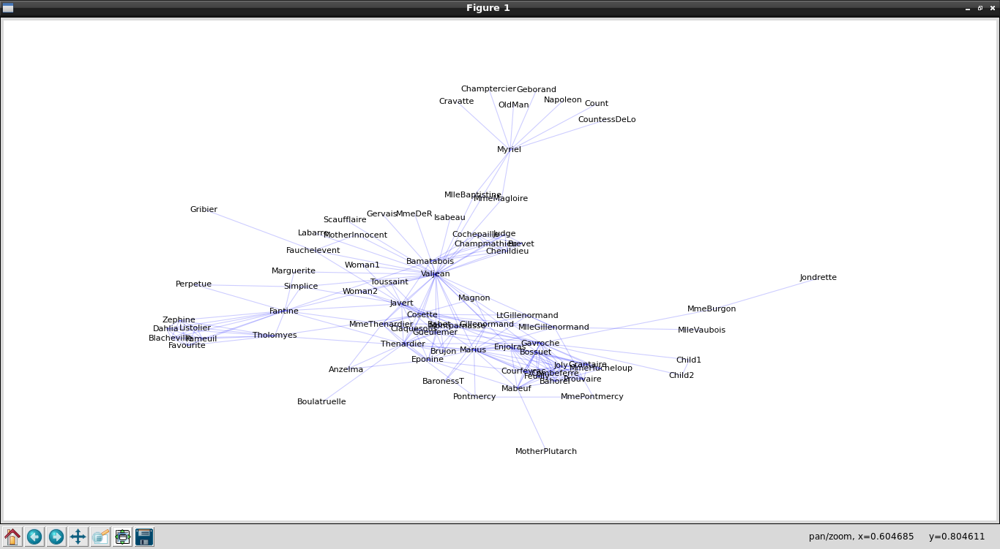
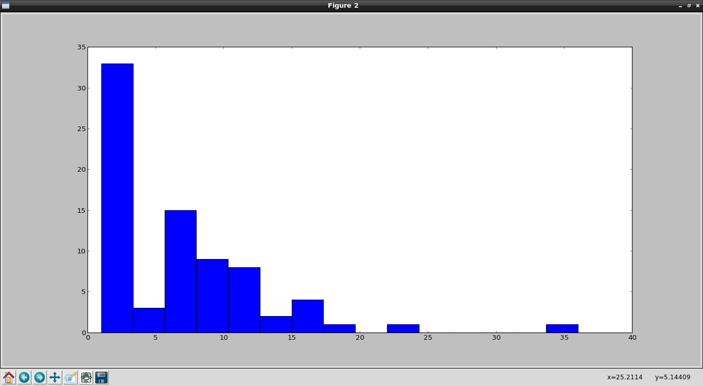

El primer artículo sobre networkx mostraba como crear los nodos y los enlaces de las redes (relación de Estados y Ciudades de Venezuela).
En este artículo se basa en un artículo del sitio "The Glowing PythonThe Glowing Python", este artículo se llama Primeros pasos con Networkx (en inglés). Este artículo usa como ejemplo las relaciones de los personajes de la novela Los Miserables. Usa un archivo con extensión gml que maneja las relaciones de los personajes, el archivo lo pueden descargar de aquí.
El archivo contiene la definición de los nodos dentro de un grafo, la información de cada nodo se coloca entre corchetes como se muestra a continuación:
graph
[
node
[
id 0
label "Myriel"
]
node
[
id 1
label "Napoleon"
]
node
[
id 2
label "MlleBaptistine"
]
node
[
id 3
label "MmeMagloire"
]
...
]
Se identifica el nodo y se coloca una etiqueta, en este caso la etiqueta es sobre un personaje de la novela ya mencionada antes.
El código de la generación del grafo se muestra a continuación:
#!/usr/bin/env python
#Se importa networkx como nx
import networkx as nx
#Se importa la libreria pyplot de matplotlib como plt
import matplotlib.pyplot as plt
# leer el grafo desde archivo con formato gml
G = nx.read_gml('losmiserables.gml',relabel=True)
# dibujar la red completa.
plt.figure(1)
nx.draw_spring(G,node_size=0,edge_color='b',alpha=.2,font_size=10)
plt.show()
A continuación se muestra el grafo:

El grafo en sí no muestra información útil que se diga, para entender más la información del grafo se creará un histograma del número de conexiones por nodo (es la continuación del código anterior):
#Histograma
#Se crea la figura 2
plt.figure(2)
#se crea la instancia degree del grafo
d = nx.degree(G)
#Se crea el histograma con los valore del grafo.
plt.hist(d.values(),bins=15)
#Se muestra la grafica.
plt.show()
La siguiente figura muestra el histograma:

Se nota en el histograma que sólo pocos personajes tienen más de 10 conexiones. A continuación se muestra el código de un grafo de sólo esos personajes con más de 10 conexiones:
def trim_nodes(G,d):
""" retorna una copia de G sin
los nodos de menos de d conexiones"""
#Se crea la copia de G
Gt = G.copy()
#Se define la instancia de degree con la copia de G
dn = nx.degree(Gt)
#Se recorre los nodos y se remueve los que tengan menos de d conexiones
for n in Gt.nodes():
if dn[n] <= d:
Gt.remove_node(n)
#Se retorna el nuevo G
return Gt
# dibujar la red solo con nodos de mas de 10
#conexiones
Gt = trim_nodes(G,10)
#Se crea la figura 3
plt.figure(3)
#Se dibuja el grafo
nx.draw(Gt,node_size=0,node_color='w',edge_color='b',alpha=.2)
#Se muestra en pantalla el grafo
plt.show()
A continuación se muestra el grafo con los personajes más relevantes de la novela Los Miserables:

¡Haz tu donativo! Si te gustó el artículo puedes realizar un donativo con Bitcoin (BTC) usando la billetera digital de tu preferencia a la siguiente dirección: 17MtNybhdkA9GV3UNS6BTwPcuhjXoPrSzV
O Escaneando el código QR desde la billetera:

Comments !